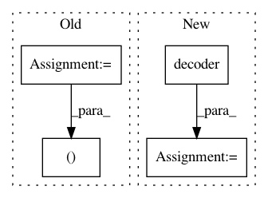

f86ceee1b4a5cfa7ddc728eabcffc6327e853af3,texar/modules/decoders/rnn_decoders_test.py,BasicRNNDecoderTest,test_decode_train,#BasicRNNDecoderTest#,39
Before Change
with self.test_session() as sess:
sess.run(tf.global_variables_initializer())
outputs_, final_state_, sequence_lengths_ = sess.run(
[outputs, final_state, sequence_lengths],
feed_dict={context.global_mode(): tf.estimator.ModeKeys.TRAIN})
self.assertIsInstance(outputs_, BasicRNNDecoderOutput)
After Change
sequence_length=[self._max_time]*self._batch_size)
self._test_outputs(decoder, outputs, final_state, sequence_lengths)
outputs, final_state, sequence_lengths = decoder(
decoding_strategy=None,
embedding=self._embedding,
start_tokens=[1]*self._batch_size,
end_token=2,
mode=tf.estimator.ModeKeys.EVAL)
self._test_outputs(decoder, outputs, final_state, sequence_lengths,
test_mode=True)
def test_decode_train_with_tf(self):
In pattern: SUPERPATTERN
Frequency: 3
Non-data size: 4
Instances
Project Name: asyml/texar
Commit Name: f86ceee1b4a5cfa7ddc728eabcffc6327e853af3
Time: 2018-03-25
Author: zhitinghu@gmail.com
File Name: texar/modules/decoders/rnn_decoders_test.py
Class Name: BasicRNNDecoderTest
Method Name: test_decode_train
Project Name: pytorch/examples
Commit Name: 632d385444ae16afe3e4003c94864f9f97dc8541
Time: 2019-09-04
Author: hongyu@mail.com
File Name: word_language_model/model.py
Class Name: RNNModel
Method Name: forward
Project Name: asyml/texar
Commit Name: c8523b2dc735a1b82ca6170e6ca349defe9f77fc
Time: 2017-11-17
Author: shore@pku.edu.cn
File Name: examples/transformer.py
Class Name:
Method Name: